Project Analysis
Network Analysis
Founders’ Memorial Station
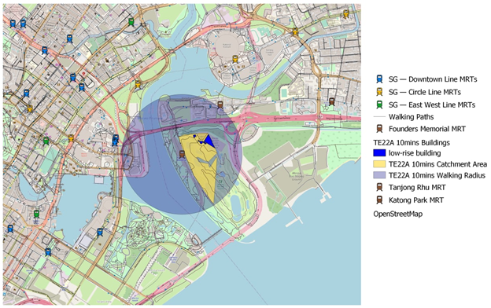
This is the 10 minutes catchment area for Founders’ Memorial Station. The area consists of only a few low-rise buildings as the place around it is a memorial. The purpose of the MRT station serves to benefit tourists the most, who wish to visit the Founders’ Memorial as there are no other stations within or near the catchment area. This provides a greater convenience for tourists and locals who want to travel by public transport to the attraction site. 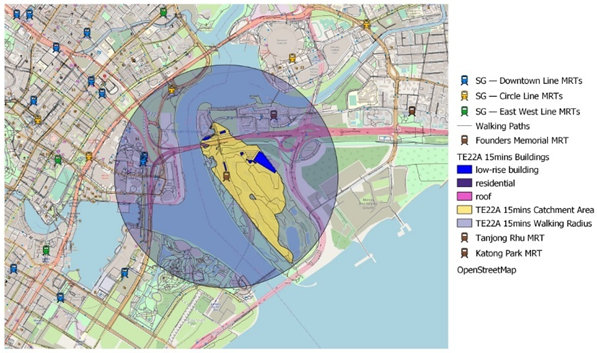
This is the 15 minutes catchment area for Founders’ Memorial Station. As compared to the 10 minutes catchment area, it has only slightly more low-rise buildings, and the catchment area is slightly bigger. Likewise, there are no other stations that are within or near the catchment area. One reason could be because of the expressway which makes walking from the other stations less accessible. Thus, implementing the Founders’ Memorial MRT station will be effective in making the site more accessible to the public and tourists.
Tanjong Rhu Station
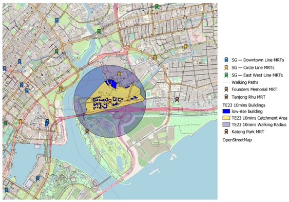
This is the 10 minutes catchment area of Tanjong Rhu station. The area consists of a few low-rise buildings and does not have any other stations within the catchment area. However, the Circle Line MRT station, Stadium, can be seen on the map to be quite near to the catchment area. However, Stadium station is built to serve commuters who are going to the National Stadium. For the residents living across the National Stadium, they now have access to an MRT station themselves, which brings them to the city without needing to walk across the river to access an MRT station. Thus, it greatly enhances residents living in the vicinity.
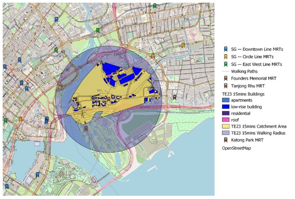
This is the 15 minutes catchment area of Tanjong Rhu station. The area covers a bigger area and encompasses a few larger low-rise buildings. However, in the catchment area captures Stadium station, as mentioned in the 10 minutes catchment area. This is more beneficial for people who want to travel to the National Stadium and are not currently in the Circle Line. This increases the accessibility and ease of travel as people can choose between either the Circle Line or the Thomson-East Coast Line to access the National Stadium for its events or just a weekend getaway with friends or family members. Hence, it is definitely worthwhile to invest in an MRT station at Tanjong Rhu station’s location.
Katong Park Station
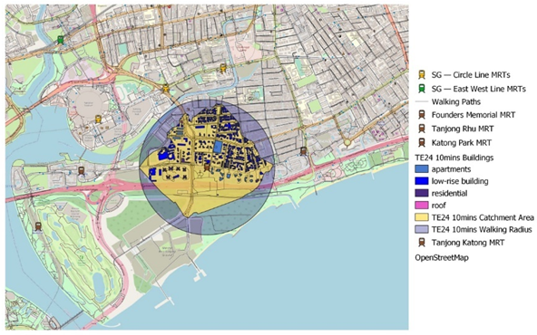
This is the 10 minutes catchment area of Katong Park Station. From the Map, we can see that the catchment area consists of several low-rise buildings and residential area which consists of apartments and residential buildings. Furthermore, it covers the Eastern end of the East-Coast Park, which will lead users to the nearby Marina Bay vicinity either by walking, jogging, or cycling. With the construction of this station, it brings about higher accessibility for residents staying near the coast to travel towards the city while increasing the accessibility of going to the Marina Bay area for people who are exercising.
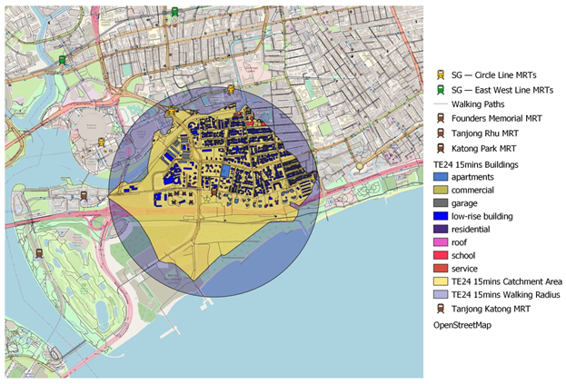
This is the 15 minutes catchment area of Katong Park station. As compared to the 10 minutes catchment area, it spreads out further and consists of more low-rise buildings and residential area in its neighborhood. It shows a greater connectivity to the Marina Bay area leading out from the East-Coast Park exit. While it does provide a greater convenience for people exercising, they are also not short of MRT options to travel back home or elsewhere This MRT station is a 15 minutes’ walk away from Mountbatten Station in the Circle Line. While the vicinity has many MRT stations, each station serves a unique purpose, where Katong Park station serves as a stop for users who are in the near the Eastern end of the East-Coast Park. Thus, it will be effective to have a station built there.
Tanjong Katong Station
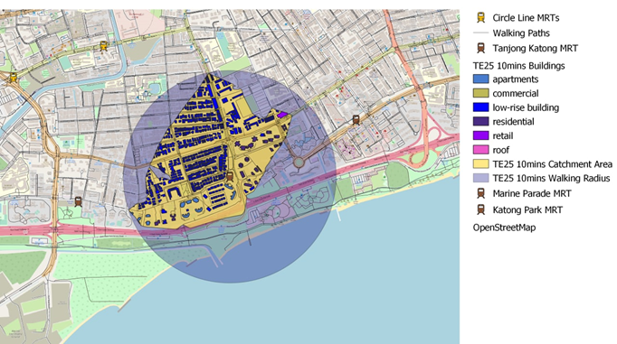
This is the 10 minutes catchment area of Tanjong Katong Station. It has a considerable number of low-rise buildings and residential area and a few commercial buildings in the area. Most of the low-rise buildings are landed properties. It is uncommon in Singapore to find an area with a high density of landed properties to have an MRT station in the same vicinity. However, with more people advocating for green and sustainable living habits, it may encourage those living in the landed properties to take public transport and not private cars if the MRT station was within a short walking distance of 10 minutes away from their home.
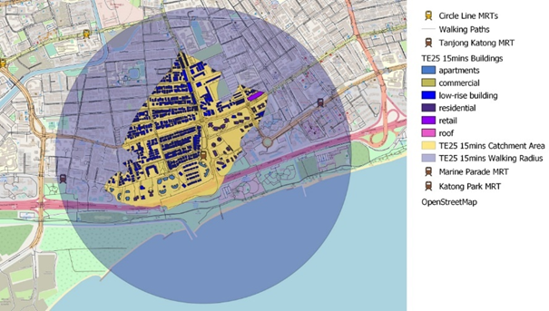
This is the 15 minutes catchment area of Tanjong Katong Station. As compared to the 10 minutes catchment area, it spreads out slightly more, having slightly more low-rise buildings and residential area. As compared to the rest of the stations thus far, this station does not consist of another MRT station(s) within a 15 minutes catchment area. Thus, this increases the effectiveness of the catchment area, as it becomes even more accessible for the people in the area to take public transport.
Marine Parade Station
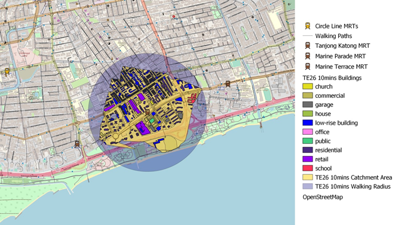
This is the 10 minutes catchment area for Marine Parade Station. This MRT station covers the most retail buildings in the area. The most prominent shopping mall in the area is Parkway Parade. Currently, commuters who wish to visit the shopping mall will either take a bus from the nearest MRT station, Dakota MRT station, or take a shuttle bus from either Sengkang, Tampines, or Bedok. However, shuttle bus services are only available during the weekends, making it highly inaccessible for commuters who are not living within the vicinity to visit the shopping mall. It also covers a church, Touch Centre. Thus, having an MRT station built in this vicinity will greatly enhance the accessibility of accessing the retail shops, especially Parkway Parade shopping mall and the church for commuters who are not living in the vicinity.
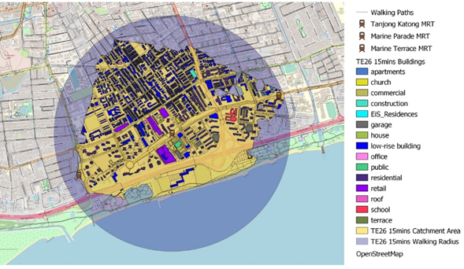
This is the 15 minutes catchment area of Marine Parade Station. It covers a more extensive area of the buildings covered by the 10 minutes catchment area. On top of that, it also covers a large portion along the stretch of the East Coast Park. Currently, park goers either drive-in or take a bus to the nearest stop to go to East Coast Park. If this station was build, it will greatly enhance the seaside for park goers. However, it is also worthwhile to note that this station is also a 15 minutes’ walk away from Tanjong Katong Station in its East and Marine Terrace Station in its West. While the advantages of having an MRT station build in this vicinity is obvious, there will be doubters who want to shed a bad light on having MRT stations in such close proximity. Nevertheless, our group feels that this MRT station not only helps to increase accessibility for residents living in this area to access other parts of Singapore, but also helps to bring commuters from other areas who wish to access the shopping malls, churches, or the East-Coast Park to this vicinity. Hence, it is definitely a cost-effective station to have.
Marine Terrace Station
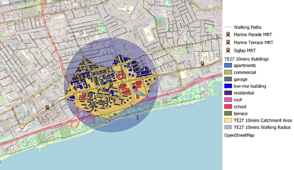
This is the 10 minutes catchment area of Marine Terrace Station. This is the MRT Station that covers the most schools amongst all MRT Stations in the same area. With Tao Nan School, St Patrick’s School, CHIJ Katong Convent, and Victoria Junior College all within a 10 minutes’ walk away from the MRT station, it is highly accessible for these education institutions and brings about more convenience for students in these schools than before.
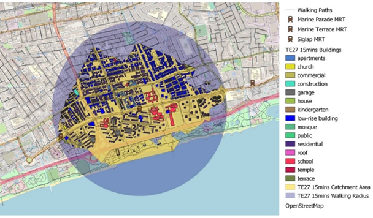
This is the 15 minutes catchment area of Marine Terrace Station. From the polygon that we have mapped out, it is important to note that there is an overlap, where it is possible to reach Marine Parade Station within 15 minutes’ walk from Marine Terrace Station. While some may argue that it decreases the effectiveness of having 2 stations in such close proximity to one another, it is important to note that it is highly beneficial for the schools on the East of the Marine Terrace Station, such as Victoria Junior Collect and St Patrick’s School. Without this station, they will have to travel 30 minutes to reach the next closest MRT station, hence while Marine Terrace and Marine Parade stations are in close proximity, both serve an important purpose in providing convenience for specific users in the vicinity.
Siglap Station
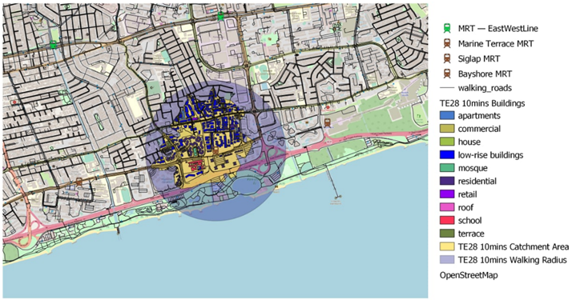
This is the 10 minutes catchment area of Siglap Station. There are many low-rise buildings, apartments, and residential buildings in the area. It also includes a mosque, Masjid Kampung Siglap, as well as a school, Victoria School. It will bring about more convenience not just to the residents living in the vicinity, but also the Muslim community who wishes to take the public transport after their prayers, and the students from Victoria School who wishes to go home after a day in school.
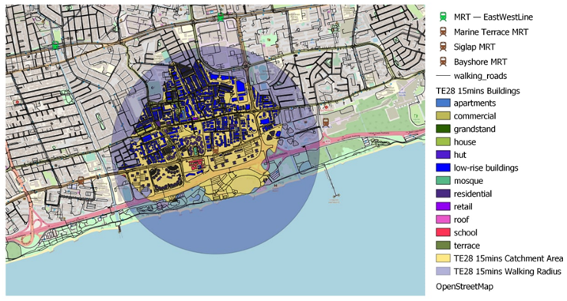
This is the 15 minutes catchment area of Siglap Station. Similar to the 10 minutes catchment area, it covers a myriad of amenities as well as residential buildings nearby. The 15 minutes catchment area is even more extensive, and it further shows the importance of having Siglap Station in the vicinity as it will greatly improve the convenience of travel for people in the same area. There is also no other MRT stations within a 15 minutes’ walk away, thus making it one of the most ideal spots to build an MRT station.
Bayshore Station
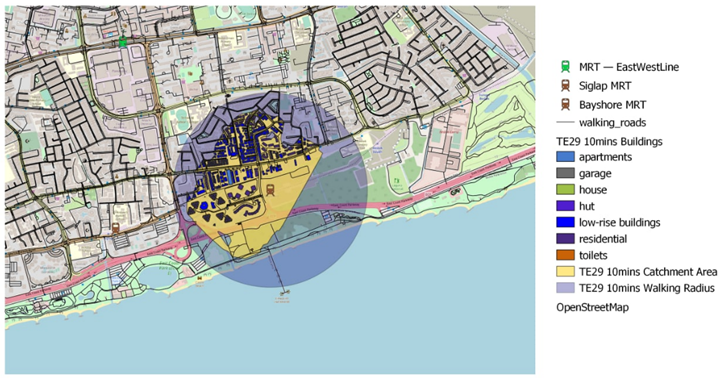
This is the 10 minutes catchment area of the Bayshore Station. There are many low-rise buildings, apartments, and residential buildings in the area. Most of the low-rise buildings are landed properties similar to the Tanjong Katong Station. With the station within a short walking distance of 10 minutes away from their home, it certainly incentivise those living in the landed properties to take public transport and not private cars.
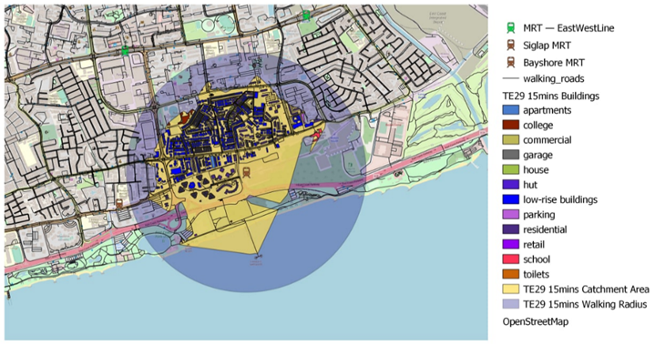
This is the 15 minutes catchment area of Bayshore Station. Similar to the 10 minutes catchment area, it consists of a large proportion of low-rise buildings, apartments, and residential area. In addition to that, Temasek Secondary School is also within the vicinity of a 15 minutes’ walk. Hence, our group concluded that it is highly beneficial for an MRT station to be built here to increase the accessibility of public transport for both the residents living in this area as well as the students from Temasek Secondary School. Furthermore, there is no other MRT stations in the nearby vicinity, making it an important infrastructure to have in this area in the near future.
Overall Analysis
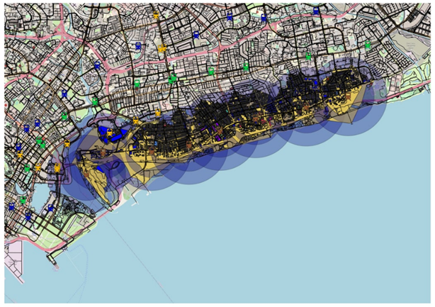
The map shows the overall Walking Radii and Catchment Areas of all the stage 4 Thomson-East Coast Line. The closest MRT Lines that can be seen from the map are the Circle Line’s 3 stations: Stadium, Mountbatten, and Dakota. The EWL can be considered close but majority of it are more than 15 minutes of walking distance to the TEL stations. With the implementation of these stations, it will bring about greater accessibility to the areas near the coast which they did not have before.
Furthermore, each station serves a unique purpose on its own. Even though some of the MRT stations are situated in areas with a high density of condominiums and landed properties, which suggests that these residents are in the middle to high wealth class and have a car of their own, the implementation of the Thomson East-Coast Line will incentivise the residents to use more public transport and reduce carbon emissions towards the environment. In another instance, Marine Parade station increases accessibility for commuters staying far away from a highly inaccessible shopping mall, Parkway Parade. This will in turn generate a greater revenue for shops in the mall. On the other hand, Marine Terrace increases accessibility for students going home or coming to school from 4 schools, which makes it highly valuable.
In conclusion, the opening of the stage 4 stations will certainly provide greater accessibility for commuters, bringing residents living in the vicinity to the city much faster than before, while also allowing commuters from other areas to access the amenities in the area at a greater convenience than before. Hence, our group concluded that it is very beneficial to construct the new stations along stage 4 and it outweighs the high cost utilized for its construction.